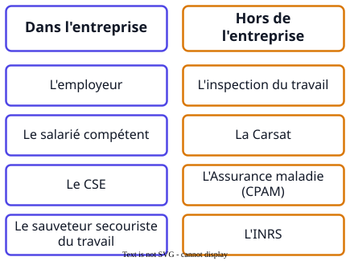

Ce que demandent les sujets
- « Identifier deux acteurs de prévention en précisant s'il s'agit d'un acteur interne ou externe à l'entreprise. »
- « Nommer l'acteur de prévention qui peut intervenir et préciser l'une de ses missions. »
La méthode

À retenir
- Comité social et économique (CSE)
- instance représentative du personnel, obligatoire dès onze salariés, qui contribue à promouvoir la santé, la sécurité et l'amélioration des conditions de travail.
- Inspection du travail
- service de l'État dont les agents veillent à l'application du Code du travail, informent, conseillent et constatent les infractions.
- Carsat
- organisme régional qui conseille, contrôle, forme, accorde des aides financières et participe à la tarification des risques professionnels.
- Service de prévention et de santé au travail
- propre à une seule entreprise ou commun à plusieurs : bien lire le dossier avant de le classer.
Un exemple de bac
« Nommer l'acteur de prévention qui peut intervenir lors de ces épisodes de grand froid et préciser l'une de ses missions. »
Sujet 2023, Nouvelle-Calédonie
InsuffisantL'inspecteur du travail.
MaîtriséL'inspecteur du travail : il effectue des contrôles inopinés pour vérifier que l'employeur respecte ses obligations réglementaires, notamment l'évaluation du risque lié au grand froid.
Nommer l'acteur seul vaut insuffisant : la mission est attendue, en lien avec la situation.